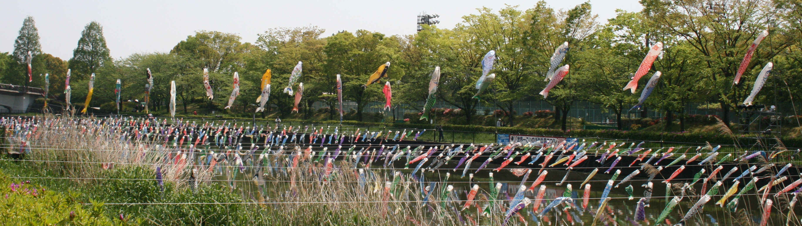

| 光る文章講座 作文ワールド 総合案内 |
「Gallery 作品展示場」、「答案百花」の姉妹編です。
| 作文ワールドⅠ － 作文ワールドの原型 |
| 作文ワールドⅡ － １人１人の作文集の扉 |
| 作文ワールドⅢ － 社会科作文１ |
| 同 － 社会科作文２ |
| 同 － 社会科作文３ |
| 同 － 社会科作文４ |
| 同 － 社会科作文５ |
| 作文ワールドⅣ － 理科作文１ |
| 同 － 理科作文２ |
| 作文ワールドⅤ － スポーツ作文１ |
| 同 － スポーツ作文２ |
| 同 － スポーツ作文３ |
| 作文ワールドⅥ － 七五の四行詩 |
| 作文ワールドⅦ － 図工作文 |
| 作文ワールドⅧ － エトセトラ（いろいろな作文） |
| 同 － エトセトラ２ |
| 作文ワールドⅨ － 家庭科作文 |
| 作文ワールドⅩ － 作文のこころ |
| 「作文みるみる上達記」 |
| 公立中高一貫校入試の作文 |
| 「東日本大震災」の作文・第１部 第２部・第３部 |
| 作文打出の小づち 総もくじ 作文編 国語編 小論文編 閑 話 |
